How to Add Workouts to Apple Watch
This is the guide for athletes using their Apple Watch to track their training and workouts. It’ll cover how to add workouts to Apple Watch, set up custom training sessions, and manage your workouts without any hassle.
Click the links in the table of contents to jump ahead.
Table of Contents
- How to manually add a completed workout to Apple Watch
- How to add new workouts to my Apple Watch
- How do I create custom workouts for my Apple Watch
- How to start a workout on Apple Watch
- How to delete a workout on Apple Watch
How to manually add a completed workout to Apple Watch
If you forgot to start a workout on your Apple Watch but still want to log it, don't worry. You can add it manually in the Health app. Here’s how:
Step 1 – Open the Health app on your iPhone
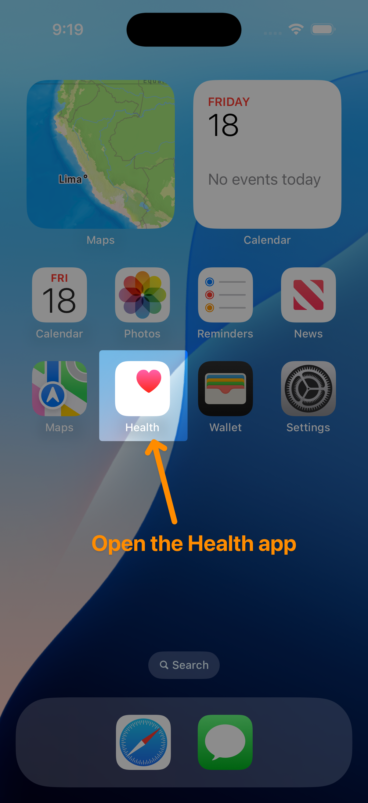Step 2 – Tap Browse, then tap Activity
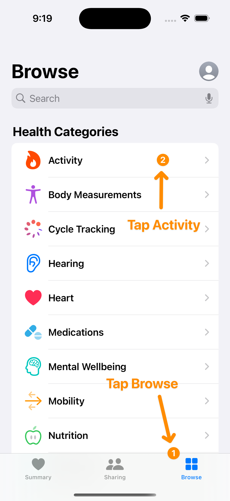Step 3 – Scroll down to Workouts and tap it
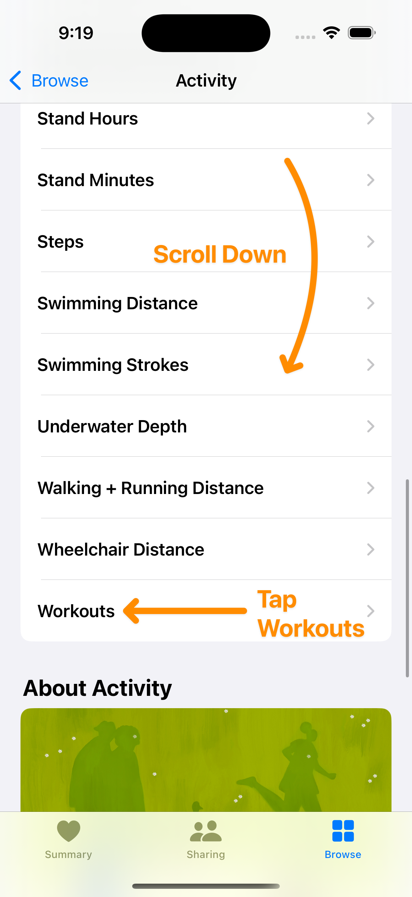Step 4 – Tap Add Data
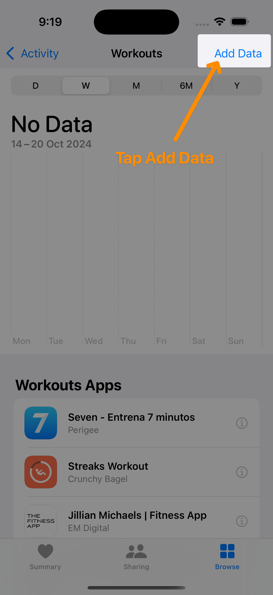Step 5 – Enter your workout details (e.g., time, calories, etc.)
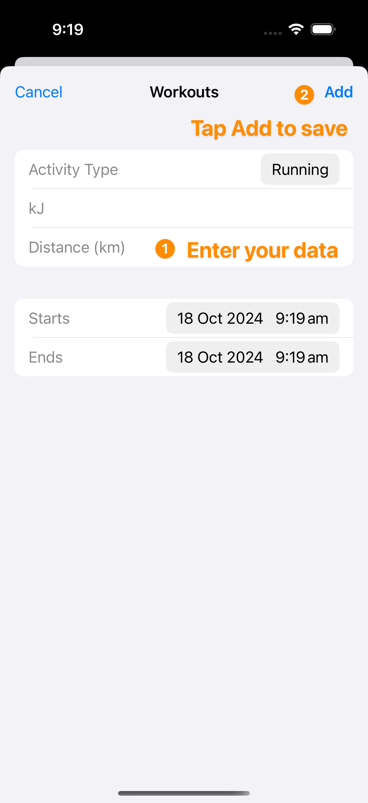Step 6 – Tap Add to save it to your Health app and Apple Watch
How do I add workouts to my Apple Watch
The easiest way to add workouts to your Apple Watch is by setting them up on your iPhone and sending them over. It’s way easier than doing it directly on the Watch. You can use the free Workout Builder app for this.
You can technically create workouts from the Apple Watch, but it’s a bit of a pain on such a small screen.
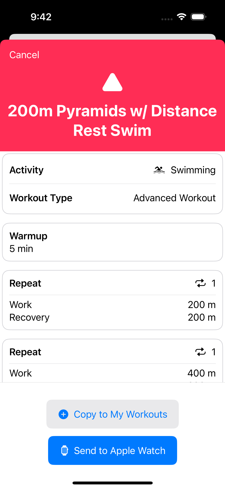How do I create custom workouts for my Apple Watch
If you want to create your own custom workouts—like a 5k run or an advanced interval session—the best way to do it is through the free Workout Builder app. It’s a simple way to set up basic, advanced, or pacer workouts (e.g., running 5km in 30 minutes).
It’s got a 4.7-star rating in the App Store. Plus, it’s free, with some cool extra features in the Premium version.
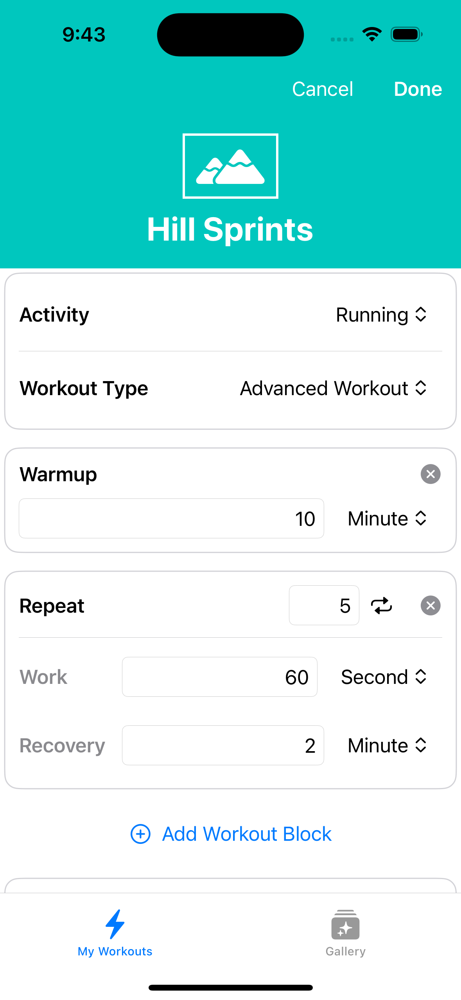
You can also create more advanced workouts for heart rate zone training, running interval workouts, structured cycling workouts, and use Apple Watch workout alerts to improve your technique
How to start a workout on Apple Watch
Once you’re ready to work out, starting it on your Apple Watch is pretty simple:
Step 1 – Open the Workout app on your Apple Watch
Step 2 – Scroll down to find the workout you want to do (you can use the Digital Crown to scroll too)
Step 3 – Tap the workout to start it
How to delete a workout on iPhone and Apple Watch
If you need to delete a workout you’ve completed, here’s how you do it:
Step 1 – Open the Fitness app on your iPhone
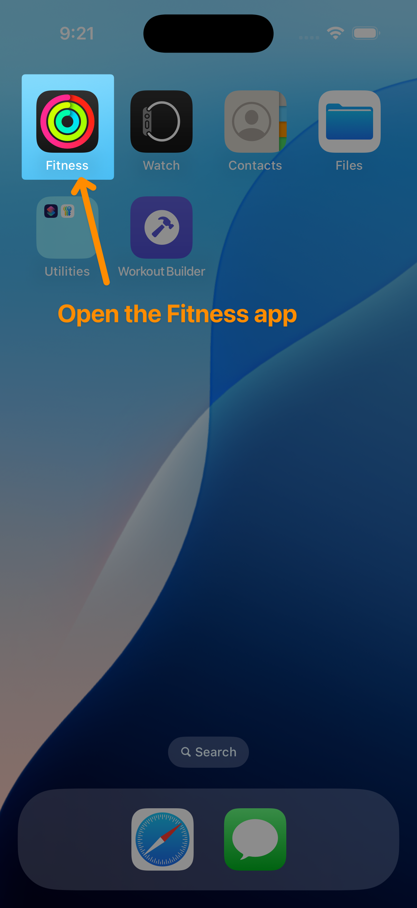Step 2 – Tap on the Sessions card header to see all your workouts
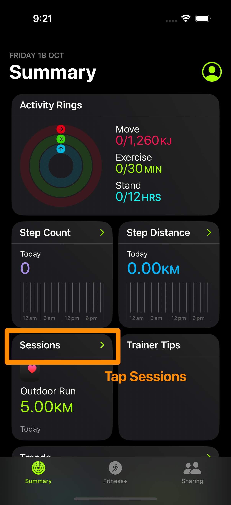Step 3 – Swipe left on the workout you want to delete, then tap Delete
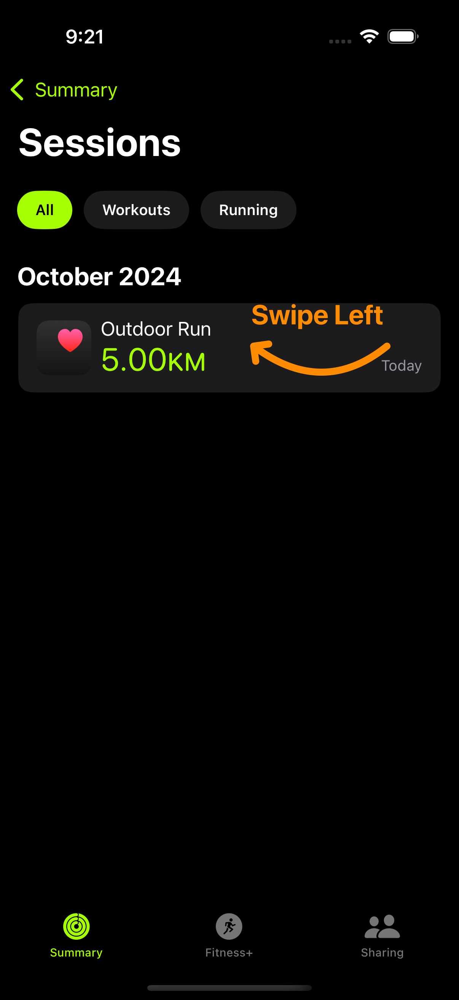Step 4 – Confirm if you want to delete just the workout, or the workout and its data
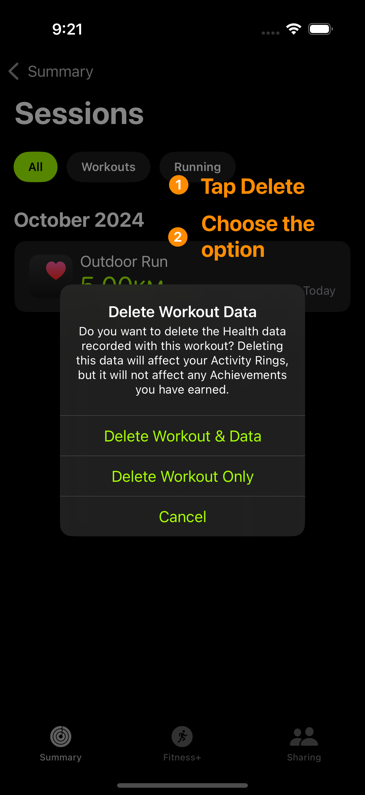